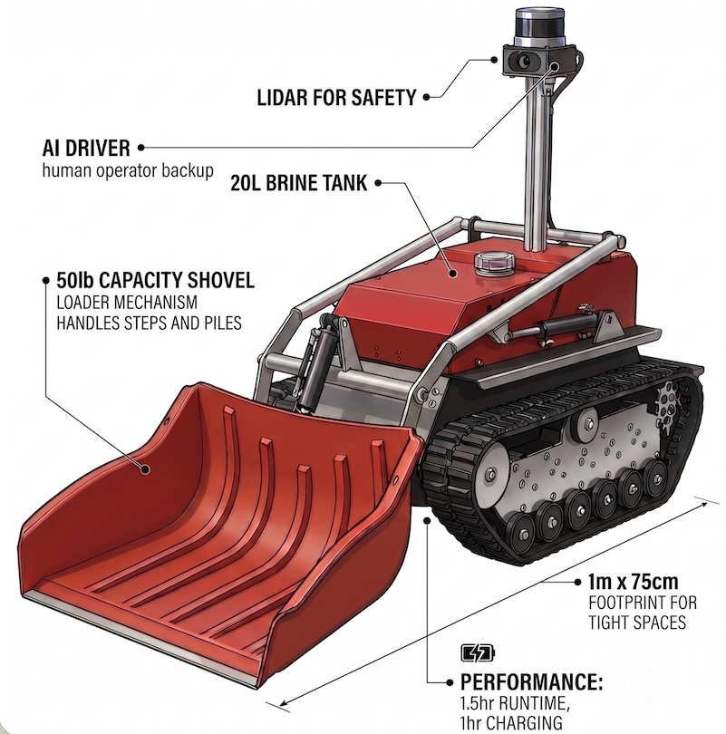

Built for Tight Spaces
A compact, tracked electric chassis designed specifically to maneuver where heavy equipment cannot operate, including the ability to clean steps.
Frost-E is a resident, autonomous mini-loader that handles tedious detail work before your crews arrive. No operational changes, just faster and more profitable routes for your existing contracts and crews.
Your snowplows clear parking lots quickly and efficiently, but your crews spend a disproportionate amount of time clearing and salting steps, narrow walkways, complex courtyards and townhouse paths. This is the slowest part of route completion and represents the highest risk zone for slip-and-fall claims.
What if you could automatically complete and meticulously document all the detail work, making the whole site as quick and easy as an empty parking lot?
Frost-E is a supplementary snow clearing machine that lives permanently on-site in a 120V charging station. Using the same self-driving technology as commercial robotaxis, it deploys continuously to manage snow and ice accumulation on smaller spaces, helping your crews complete their visits faster and providing detailed documentation to limit your liability and lower your insurance premiums.

A compact, tracked electric chassis designed specifically to maneuver where heavy equipment cannot operate, including the ability to clean steps.
With 1hr of charging and 1.5 hrs of runtime, it provides the heavy-duty torque necessary to clear up to 10,000 sq ft of 5cm accumulation per cycle, handling the heaviest of snowfalls.
Ability to detect ice using LIDAR and spray liquid brine to prevent initial bonding. The tank is easily refilled by your crew during their standard final sign-off visit.
Generates detailed, time-stamped visual log of its continuous clearing efforts. This provides indisputable evidence that you maintained an active duty of care throughout, fortifying your defense against negligence claims and helping lower your insurance premiums.
We don't change how you manage your operations, crews, or contracts; we give you a simple tool to complete your work faster and lower your insurance premiums.
As snow falls, Frost-E continuously clears accumulation by itself. It simultaneously broadcasts a real-time state-of-property report to your dispatch board, giving you total visibility to plan your fleet routing.
Your crew pulls up and clears the main lot as usual. They find all walkways and paths already cleared.
Instead of doing detail work, your crew simply inspects the robot's work, tops off the brine tank, and signs off on the site.
Operating in tight residential zones requires absolute precision, smarts, a safety-first mindset, and multiple redundant systems. Unlike existing snow-clearing robots which rely on repeating rigid routines, Frost-E combines the latest self-driving technology with by a strict, hardware-level safety protocol that operates flawlessly day or night.